Creating Custom Fields for Catalog Pages¶
Alation Cloud Service Applies to Alation Cloud Service instances of Alation
Customer Managed Applies to customer-managed instances of Alation
The Overview tab of a catalog page of an Alation object (schema, table, column, etc.) is composed of fields. When you use catalog pages out of the box, they have some essential default fields, such as tags, stewards, or description. A Catalog Admin or Server Admin can customize catalog pages by creating and adding custom fields to existing object templates, creating custom templates for the article objects, and applying permissions to custom fields.
Sample catalog page of a table object:
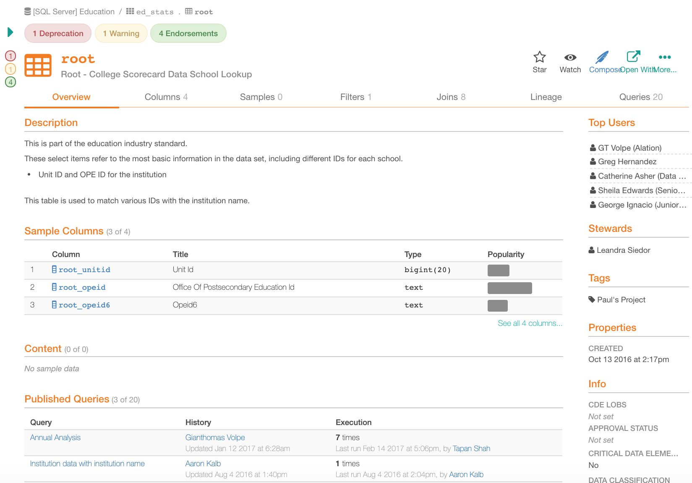On the Customize Catalog page in Alation you can create your own custom fields and add them to the catalog page templates.
Starting with 2022.3, glossary terms may now be used as values for object sets and references custom field types. Starting with V R6 (5.10.x), you can customize the layout of the Table and Column templates. See Editing Object Template Layout.
Types of Custom Fields¶
Alation provides the following custom fields:
Dates
Multi-Select Pickers
Object Sets
People Sets
Pickers
References
Rich Texts
Icon |
Custom Field type |
Purpose of Custom Field Type |
Example |
|---|---|---|---|
Object Sets |
Use this field to link data objects, users, and articles to a specific catalog page in bulk. You can define which object types are permitted in the set. Object Sets offer one-to-many relationship, where one catalog page can point to multiple objects in the set. |
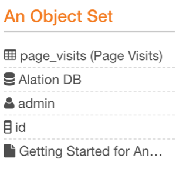 | |
People Sets |
Use this field to form groupings of users and groups. Placing this field on a template, you will be able to link relevant users or user groups. |
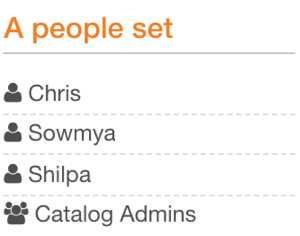 | |
References |
A Reference is similar to Object Sets, but provides a one-to-one reference. |
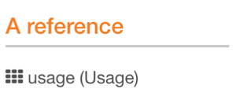 | |
Pickers |
Use this field for single-select list values. |
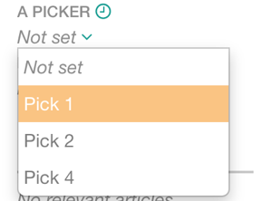 | |
Multi-Select Pickers |
Use this field for multi-select lists. |
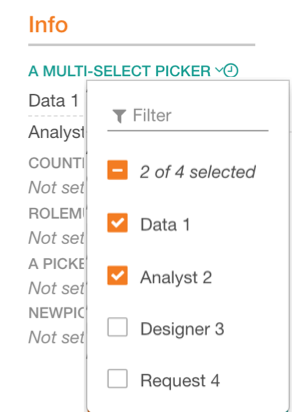 | |
Rich Text |
Use this field for blocks of text. The text included in this field is displayed in the main section of the catalog page. |
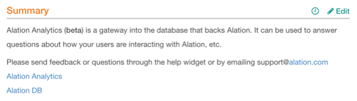 | |
Dates |
A Date field allows you to select a specific date. If you want to create a date range, create two date fields, one for the start and one for the end date. |
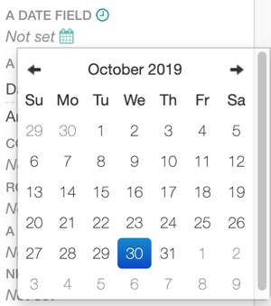 |
Adding a Custom Field¶
To work with custom fields and templates, you need a Catalog or Server Admin admin role.
Log in to Alation as a Catalog or Server Admin. Click the settings icon on the upper right of the main toolbar:

Catalog Admins - In the menu that opens, click Customize Catalog. The Customize Catalog page will open on the Custom Fields tab: Server Admins - On the Admin Settings page that opens, click Customize Catalog in the Catalog Admin section. The Customize Catalog page will open on the Custom Fields tab:
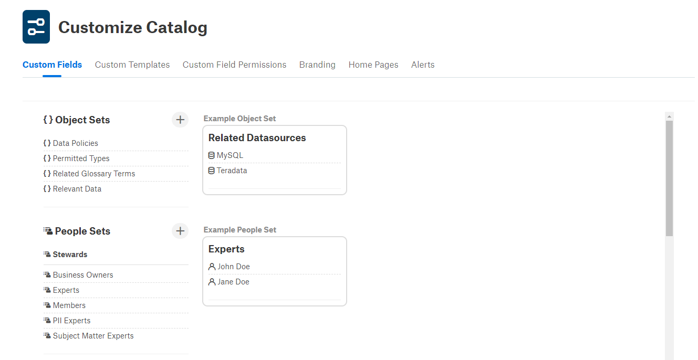Scroll down to the type of custom field you want to add.
Click the + (Add) icon. Note that depending on release, the add icon may be on the right to the field type name or at the bottom of the field list of this type. The new field editor will open on the right.
Provide the required information using the prompts in Alation UI.
Note
Each field type has several required parameters which you will need to provide when creating the field. More complex fields will have more parameters. For example, when adding object sets and references, you will need to specify the target and source field names to create back-reference fields on the source pages. For list types (pickers and multi-pickers), you will need to create lists of available values. Rich texts and dates only require a name and optionally tooltip text.
Save your field by clicking the Save icon on top-right:
Creating an Object Set Field¶
An object set field is a complex field that includes two parts: target and source. The target is the main object set field that is applied to a template and source is a back reference field that should appear on the page of the object that is referenced in the target field.
To create an object set custom field:
Click the Add icon for object sets. The new field editor will open on the right. There are two sections: on the Target Page and on the Source Page:
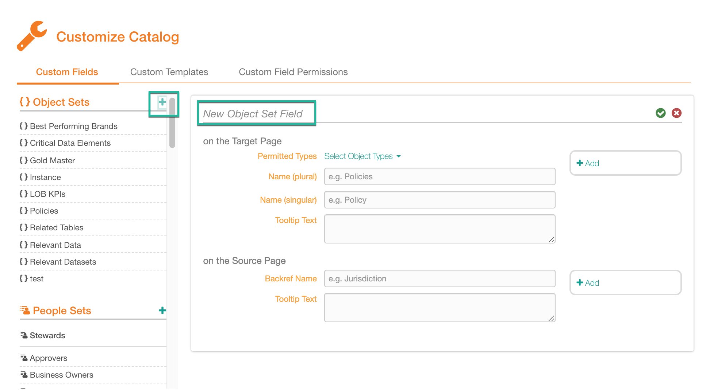Note
In releases up to V R6 (5.10.x), the back-reference part of the field is not functional and is addressed in future releases. Users will need to provide both target and source parameters to save the custom field.
In the on the Target Page section, enter the plural and singular names for the new custom field and the tooltip text.
Under the on the Source Page section, enter the Backref Name and Tooltip Text.
Click the save icon to save the changes:
The custom field you created is added to Alation and is displayed in the list of existing fields of the object set type on the left.
Editing a Custom Field¶
On the Customize Catalog > Custom Fields tab, find the custom field to edit.
Click the custom field. The custom field editor will open on the right. Make the required changes and click the Save icon:
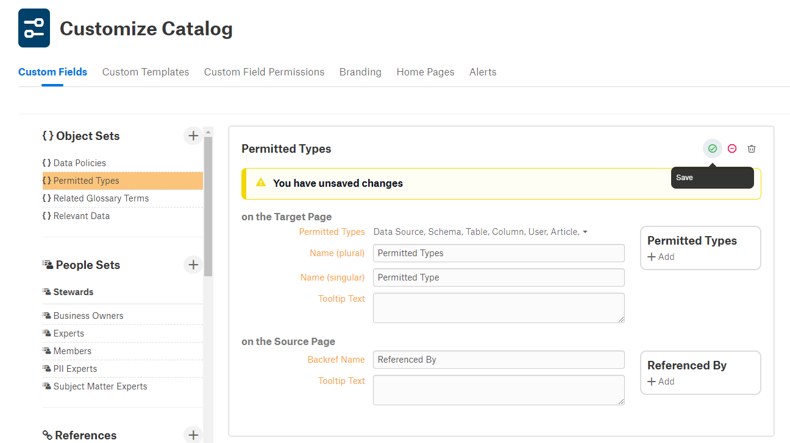
Deleting a Custom Field¶
On the Customize Catalog > Custom Fields tab, find the custom field to delete.
Click the custom field. The custom field editor will open on the right.
Click the Delete icon on top right of the editor.
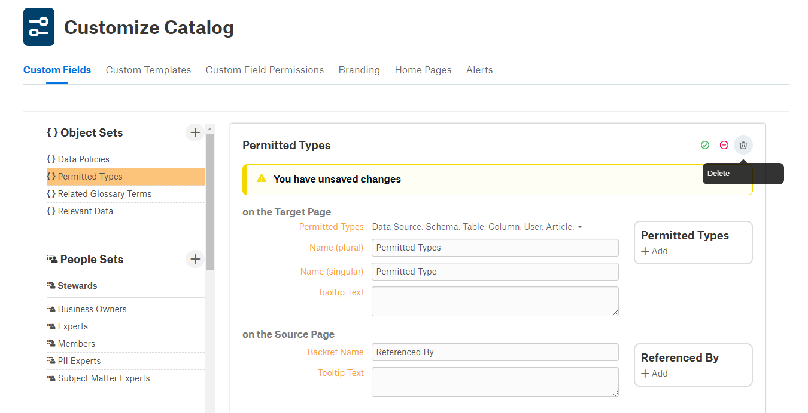
In the confirmation dialog that opens, confirm the deletion. The field is deleted.